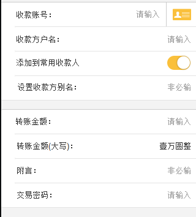

本来打算做成这样的，在实验后发现做不了，客户端做了自动适配，每次都不能按照我所写的按钮个数来换行，好诡异啊
多个输入框
多个输入框从上往下排列，在先前的项目中大家都是习惯写一个table，其实不必要，只用写输入框自动排版即可。
滚轮日期控件
Select 联动
当选择不同的下拉选项时其他内容根据选择项的不同显示不同。
标题栏居中对齐
标题栏中标题和返回和首页按钮居中显示，不能使用top定位需要使用table中的td的valign来居中。
Table 分隔线
如果在tr中加上分隔线，有几种不同的方法，可以使用tr的背景图有线，但是最后一个tr的背景图无线。可以多个一个空的tr高度为1px，加上相应的背景颜色即可，还可以在tr中写一个div等。
Table 合并td(尝试)
尝试实现合并td。
tr 中多个td
在tr中包含多个td，每个td中可以为lable，image，select，input等。
目前恒丰项目中代码中很多位置都写的是td中含有div，其实不用写那么多div。

tr 的显影
实现当选择不同的条件时显示不同的内容，比如选择不同的卡展现不同的卡详情。
Table 中多文字描述
Table 滑动继续加载 在数据超过一定的条数时往上滑加载更多并更新当前table内容。
网点介绍
地图控件插上大头针同时展现网点介绍。
网点查询
根据查询条件刷新地图
输入动画
标准银行中输入动画
吐账单动画加声音
转账完成后动画
控件滑动动画
多个卡片滑动动画
界面滑出动画
登陆界面滑出动画
控件左右晃动动画
按钮左右晃动动画
控件上升和下降动画
标准银行中切换主题动画
图片的不断扭曲
不断改变图片样式达到图片不断扭曲变化。
卷角动画 标准银行中卷角动画
离线接口整体流程使用 客户端启动时在握手TLS的回调中调用offline:update_desc接口请求服务器resource_update接口，获取离线资源的下载描述，并缓存，在此接口的回调中根据返回的值弹出是否更新的提示框。 如果用户选择确定更新则调用offline:update_resource接口下载离线资源。 一般来说在运行过程中不会调用offline:update_desc接口更新离线资源下载描述，如果碰到必须得调用这个接口的情况，则需要先调用offline:update_hash接口。 如果在界面入口调用offline:getOptInfoInLocal获取客户端本地已下载资源，随后调用了offline:downOptionalFile下载可选插件包，此时需要重新调用offline:getOptInfoInLocal刷新获取的客户端本地已下载资源描述。
判断是否下载
判断插件是否已经下载
判断是否升级
插件是否需要升级
发起多个下载动作
实现插件下载
视频播放
实现视频播放特别强调视频对象的释放
音频播放
实现音频播放特别强调音频对象的释放
饼状图
多个饼状图重叠
柱状图
横排和竖排柱状图
折线图
关于折线图的Y值 建议使用时,还是初始值为0,并且y轴数值平分,如果初始值不写0,那么初始值建议写,(y值最大值-y最小值)/(y上数值个数-1)的结果的倍数,这样最起码可以使网格线按比例显示......但是Y轴还是建议数值间隔为相等的,不然就会出现Y轴坐标值位置不正常
城市选择控件
机票预订中城市选择控件
电影票座位控件
-控件的onclick事件的传递 两个button的onclick事件分别为onclick1，onclick2，两个button界面上布局为button1上叠加另一个button2，当button2的ebable属性设置为false时，此时点击的位置为叠加位置则会触发onclick1事件。
-display：none不占位问题。 相关问题为：二级菜单折叠动画。